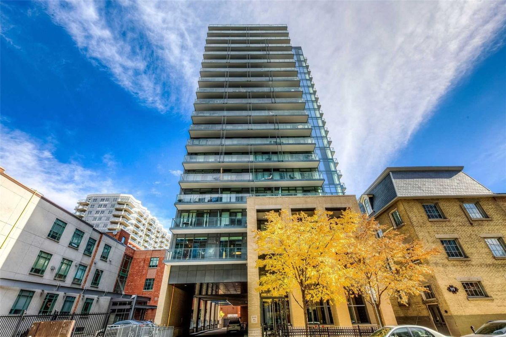
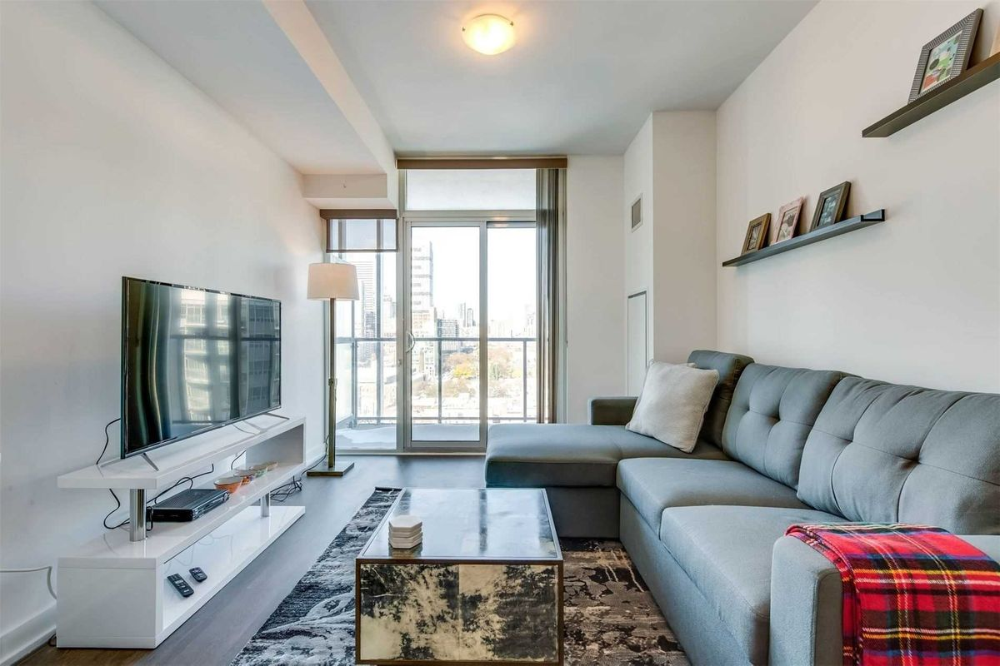
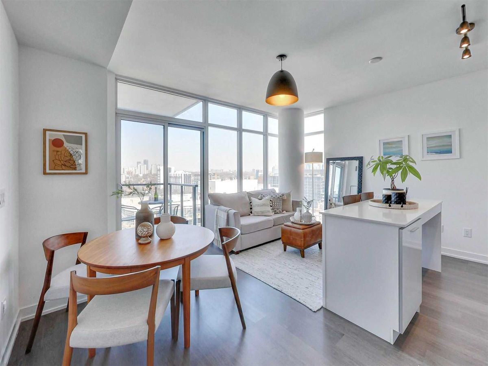

St. Lawrence
105 George St

List for Sale NOW
|  | $789,900 |
||
| Bed | 2 | Bath| 2 | 745 SQFT | |
| Parking | 1 | $376/mth | 3Days on Market | |
|  | $569,900 |
||
| Bed | 1 | Bath| 1 | 527 SQFT | |
| Parking | 0 | $479/mth | 26Days on Market | |
About This Condo
For those who want to share a property with history, without living directly inside of it, the Post House Condos deliver. These modern condos at 105 George Street combine 21st Century living with constant reminders of times gone by.The Post House Condos building shares a piece of land with two heritage properties: the Bank of Upper Canada, built in 1827, and Toronto’s first post office, built in 1834. The post office still functions today, plus it now features a small museum, while the bank has since been converted into offices. These offer some protection as well: south-facing unit owners need not worry about new towers cropping up and blocking their views, since these buildings are protected properties that aren’t going anywhere anytime soon.
Alterra Group is behind the construction of this luxurious building, along with designs by Wallman Architects and interiors by U31. Completed in 2015, the 22-storey construction contains nearly 300 Toronto condos within its glass confines, and perched atop a yellow brick base.
The amenities are similarly lavish, with residents of the Post House Condos privy to a gym, car share, saunas, yoga studio, barbecues, party room, and games room, plus a 24-hour concierge and guest suites to boot.
The Neighbourhood
Located in the St. Lawrence Market neighbourhood, this bustling area is the one where all types of Torontonians intersect: professionals, tourists, creatives, foodies, and the list goes on and on. It’s no wonder that this eclectic bunch is attracted to the area, considering its profusion of office towers and heritage buildings, as well as cultural venues and markets.Standing out is, of course, the St. Lawrence Market itself. While the market was established in 1803, the building that currently hosts vendors five days a week was built in 1968. Inside the market, shoppers can find everything from global assortments of cheeses to local produce and freshly baked bread. Certain stalls in the market are even renowned for their prepared foods, such as Carousel Bakery, which boasts the best peameal bacon sandwiches in the city.
Alternatively, there’s an eclectic shopping and eating scene on Mount Pleasant Road, one city block east. For those living in the J. Davis House Condos who don’t prefer Starbucks, most of the cafés, restaurants and boutiques along Mount Pleasant are independently run.
Transportation
105 George Street is a prime locale for venturing around downtown Toronto. Residents without cars can reach Union Station in only 15 minutes on foot, or there is always the option to ride one stop from King Station when the weather refuses to cooperate.Drivers can use Jarvis Street to reach the Gardiner Expressway, from which they can traverse the southern edge of the city. This highway can also be used to exit the city altogether, as it offers connections with the 427, the Don Valley Parkway, and the Queen Elizabeth Way.
For those planning to travel by air, Pearson International Airport is just over 30 minutes away by car, or about an hour when using public transit. Alternatively, Billy Bishop Toronto City Airport — located where Bathurst Street meets Lake Ontario — can be reached in 30 minutes via streetcars along King and Bathurst Streets.